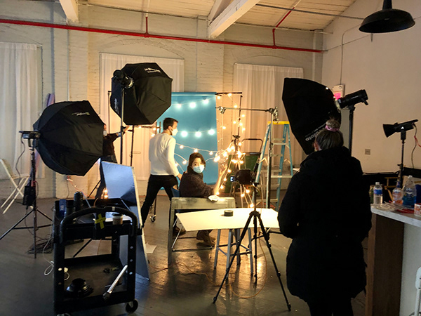

My current job:
Physical Therapy Receptionist
Past internships/experience:
1) Social Media Manager at ET Studio Productions
In Spring 2021 I interned at a music company called ET Studio Productions. I worked as a social media manager. My duties included creating and editing a website for the company, transcribing interviews, and coming up with creative posts for the company's social media accounts.
2) Writer/Production intern at CunyTV
In Fall 2021 I interned at CunyTV as a writer/proudction assistant for their program Latinas. My role was to write and produce an original segment for their 30 minute show, Latinas.